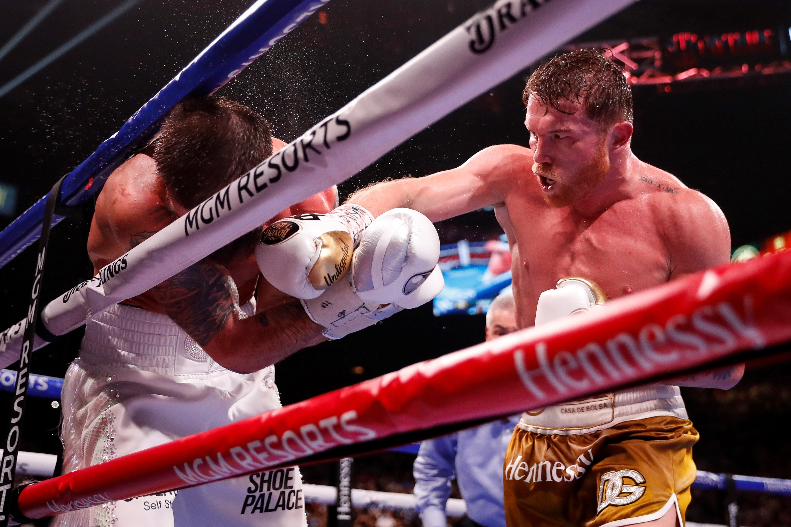
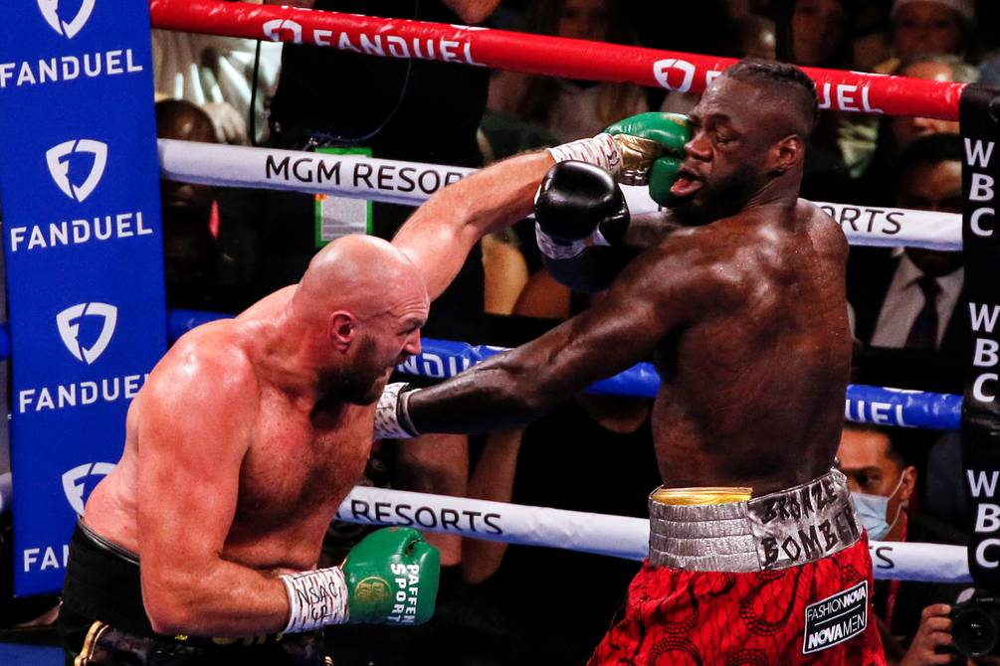

Boxeo

9/11/21
 Canelo
Canelo
El boxeo es de los deportes más exigentes que existen, y en este deporte ha surgido un peleador que ha maravillado a todos con su gran destreza: Saúl “Canelo” Álvarez. Es un peleador mexicano que hoy por hoy es el mejor libra por libra del mundo, hazaña de suma importancia en la historia de este deporte. El Canelo ha derrotado a múltiples campeones mundiales, como lo fueron Caleb Plant, Billy Joe Saunders, Callum Smith, Gennady “GGG” Golovkin, entre otros. Canelo ha unificado todos los cinturones en la categoría de los supermedianos, y parece que no hay nadie capaz de detener su paso demoledor por este deporte. Canelo comenzó en el boxeo profesional a los 15 años, y tiene un récord de 60 peleas: 57 victorias, 2 empates y únicamente una derrota. Con su estilo impredecible, combinaciones variadas y sumamente peligrosas, un gran poder en sus puños, y un impecable movimiento de cintura y cabeza, Canelo es el mejor peleador hoy en día, el mejor libra por libra del deporte.
 Gypsy King
Tyson Fury
Tyson Fury es un boxeador de pesos pesados, campeón del mundo.
 Muhammad Ali
Muhammad Ali
Muhammad Ali
Muhammad Ali es el mas grande boxeadr de la historia.